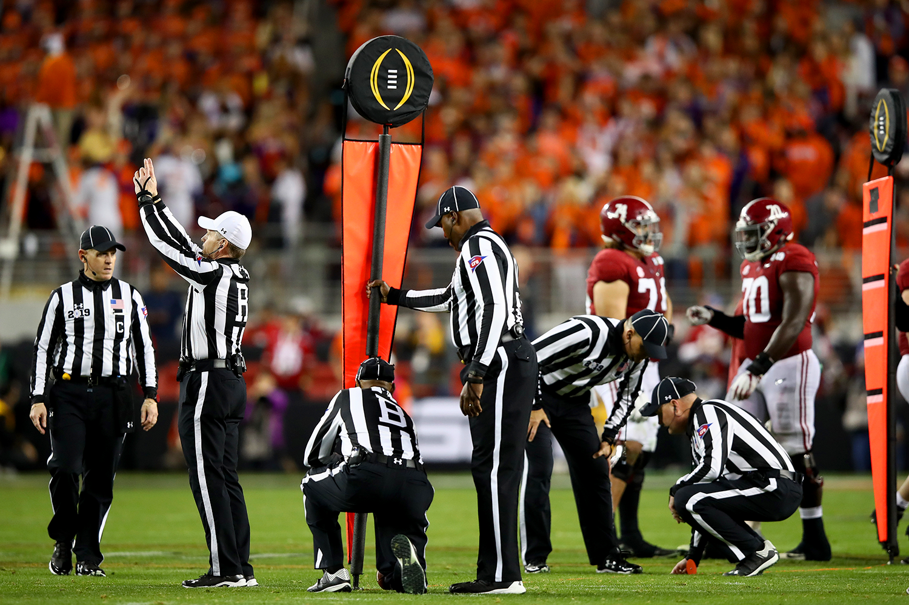
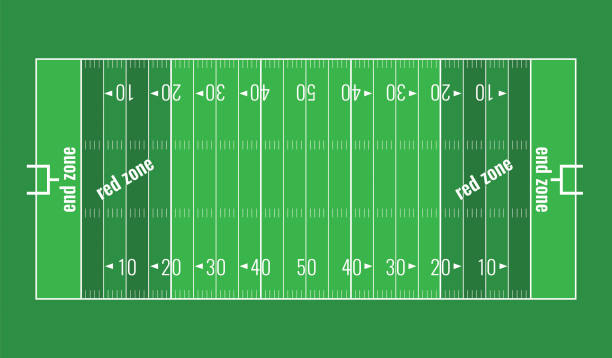

The game has 2 teams with 11 players on the field a a time (one offence, one defence). It is played over 4 quarters of 15 minutes each.
Eache team has 3 time outs per half (2 quarters) with a 12 minute break at he half way mark
The goal is reach the other temas "end zone" to score. You can do that by running with the ball or passing it down the length of the field. The play is dead when the ball carrier is tackled and his knees are on the ground or the players is out of bounds.
Although there are only 11 players on the field, a team can have up to 45 players. The quarterback is the play who dictates the play and throws the ball to the receivers.
Downs
The offence has the possesion of the ball.
They start on first down. they have 4 tries to get the ball 10 yards.
On 4th down, if the team doesn't get the first down, they will usually kick a field goal if they are in range or punt the ball, however the team can choose to keep their offence on the field and try for the first to keep possesion.
However if they don't get the yards needed the ball is given to the other teams offence where the 4th down ball is marked.
br
A flag can effect the yardage needed for the first down.


Scoring
Touchdown: 6 points for reacing the endzone with the ball.
Field goal: 3 points for kicking the ball through the goal posts (uprights).
Extra point conversion: 1 point for kicking the ball through the goal posts after a touchdown.
2-point conversion: 2 points for reaching the endzone from the 2 yard line after a touchdwon.
Safety: 2 points for tackling the ball carrier in the ball carriers own end zone.